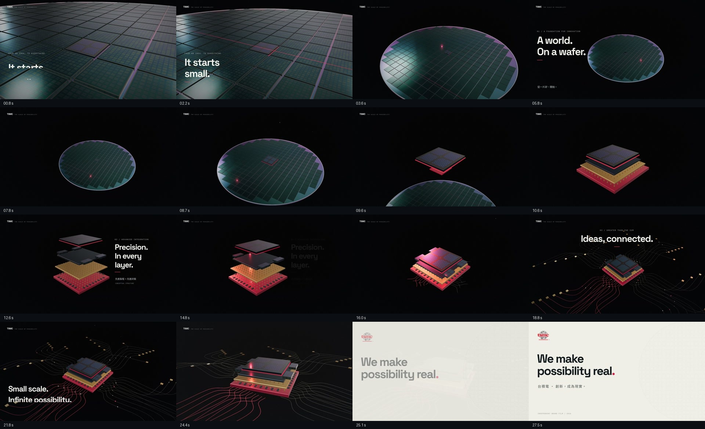

這次重製集中完成一支 28 秒主片。Remotion 管理時間軸、文字與音訊，Three.js 建立實際 3D 物件、材質和鏡頭。先前的三套工具版本仍可在網站觀看。
| 時間 | 畫面 | 聲音與節奏 |
|---|---|---|
| 00:00–00:04 | 從晶粒細節拉遠，建立微觀尺度。 | 稀疏旋律、空間感與低頻鋪陳。 |
| 00:04–00:08 | 完整晶圓與移動反光。 | 和聲進場，視覺留下閱讀時間。 |
| 00:08–00:16 | 同一晶粒抬升，封裝層展開後重新組裝。 | 分層細響、漸強與組裝重音。 |
| 00:16–00:24.5 | 訊號沿路徑外傳，鏡頭轉向完整結構。 | 完整節奏、明亮琶音，之後釋放。 |
| 00:24.5–00:28 | 暖白色品牌收尾。 | 最後和弦與延長殘響。 |

研究來源是 Lukas Margerie 的 YouTube 教學公開逐字稿。本次重新嘗試後，原片仍無法在此環境播放，因此沒有宣稱逐鏡比對或已客觀超越其示範。實際採用的是：先定視覺方向、列分鏡與節拍、設計連續物件、檢查輸出並修正。